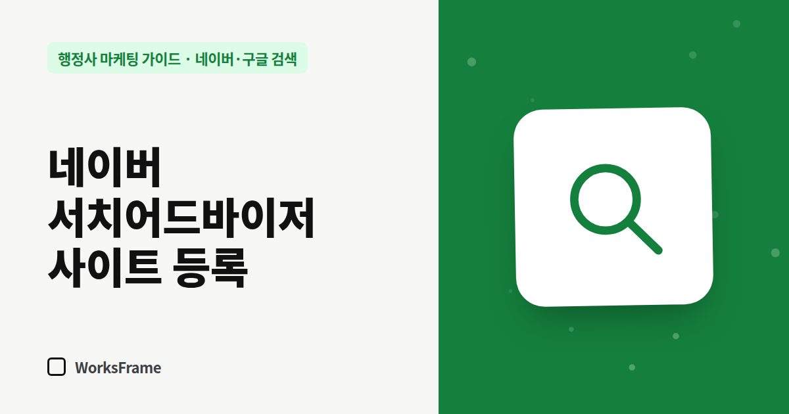

네이버·구글 검색
네이버 서치어드바이저 사이트 등록과 사이트맵 제출 — 행정사 홈페이지 필수
한 줄 답
네이버 서치어드바이저에 홈페이지를 등록하고, 내 사이트가 맞는지 확인한 뒤, 사이트맵과 RSS를 제출하세요. 네이버가 홈페이지를 더 빠르고 정확하게 가져갑니다.

홈페이지를 만들어 두기만 하면 네이버가 언젠가 찾아오긴 합니다. 하지만 “여기 사이트가 있어요”라고 직접 알려 주면 훨씬 빠르고 정확하게 수집됩니다. 그 창구가 네이버 서치어드바이저입니다.
등록 순서
- 네이버 서치어드바이저 접속 → 웹마스터 도구
- 사이트 등록 — 홈페이지 주소 입력 (
https://포함) - 소유 확인 — 안내되는 HTML 파일을 홈페이지에 올리거나, 메타 태그를 넣기
- 사이트맵 제출 — 보통
/sitemap.xml - RSS 제출 — 글 목록 RSS가 있다면 (
/feed.xml등)
소유 확인 파일은 비밀번호가 아닙니다. 홈페이지 최상위 주소에 그대로 두어야 확인이 유지됩니다.
등록 후 확인할 것
- 수집 현황 — 페이지가 몇 개 수집됐는지
- 검색 결과 미리보기 — 제목과 설명이 원하는 대로 나오는지
- 새 글을 올리면 수집 요청 — 웹페이지 수집 요청 메뉴 활용
사이트맵이 뭔가요?
홈페이지에 있는 페이지 목록을 검색엔진이 읽기 좋게 정리한 파일입니다. 업무 안내 글을 새로 올릴 때마다 사이트맵에도 추가되어야 합니다. 대부분의 홈페이지 빌더는 자동으로 만들어 주고, 직접 만든 사이트라면 글을 추가할 때 함께 고쳐야 합니다.
검색 제목·설명도 함께 점검
서치어드바이저에서 수집이 잘 되어도, 페이지마다 제목과 설명이 똑같으면 검색 결과에서 구분되지 않습니다. 업무 안내 페이지마다 “업무 + 대상 + 지역”이 들어간 제목을 따로 주세요.
자주 묻는 질문
등록하면 바로 검색에 나오나요?
수집과 반영에는 시간이 걸립니다. 며칠에서 몇 주까지 걸릴 수 있으니, 등록 후 수집 현황을 가끔 확인하세요.
블로그도 서치어드바이저에 등록해야 하나요?
네이버 블로그는 네이버가 직접 수집하므로 따로 등록하지 않아도 됩니다. 등록이 필요한 것은 사무소가 운영하는 홈페이지입니다.